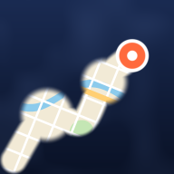

Tap Look up to see the neighbourhood, district, city and region you are in, and how much of each you have explored.
Area outlines come from OpenStreetMap. Looking them up needs an internet connection.
iPhone pauses web apps when you switch away or lock the screen, so Been Here only records while it is open. To fill in the gaps, turn on Timeline in Google Maps and import it below now and then.
Files can be GPX or KML tracks, GeoJSON, a Google Maps Timeline export, or a Been Here backup. Photos clear the fog where they were taken.
Your iPhone can remove the location when you pick photos in a web app. Save the photos to the Files app first, then use Import files and pick them from there.
You have not saved a backup yet.
Your map is stored only on this iPhone. Save a backup to Files or iCloud Drive now and then. To restore, use Import files and pick the backup.
Map tiles by Esri. Country shapes from Natural Earth. Towns and cities from GeoNames. Area outlines from OpenStreetMap contributors via Nominatim.
Tick places you went before you started using Been Here. Places with cleared fog are ticked for you.

The world starts covered in fog. Everywhere you go clears it.